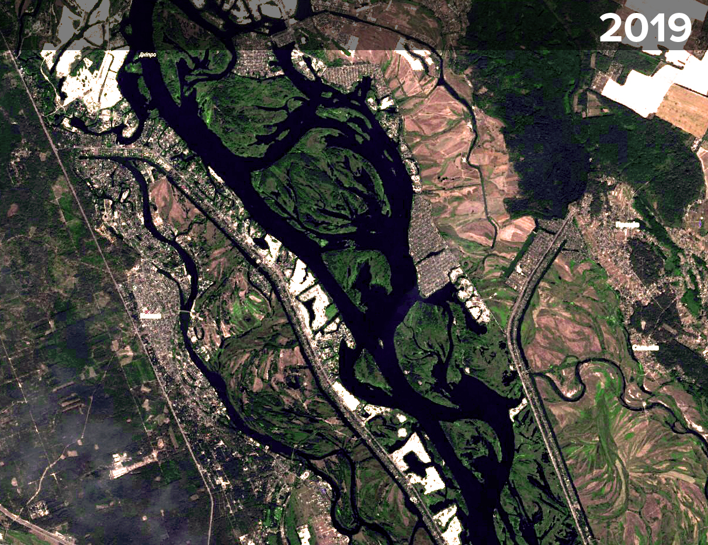

Пісок це нафта будівництва. Без нього не ростуть міста. Київ останні роки активно розбудовується і потребує піску. І його везуть з Дніпра, Десни і десятків інших місць. Везуть баржами й іноді автівками. Частина видобутку легальна, а чаcтина - ні. Та навіть на легальних родовищах ніхто не знає обсяги видобутку. Ми розібралися, звідки з’являється пісок, з якого збудують вашу нову квартиру.
Автори: Андрій Гарасим, Петро Боднар
Ми взяли дані Автоматичної ідентифікаційної системи суден (АІС, англ. Automatic Identification System, AIS), яка використовується у судноплавстві для їх ідентифікації. За допомогою цієї системи ми зібрали дані переміщення буксирів і, відповідно, транспортованих ними барж в акваторії Дніпра та Десни поблизу Києва. Зібрані дані показали маршрути буксирів до місць видобутку річкового піску, а також назад – до майданчиків його складування. Водночас, не варто забувати, що частина піску вивозиться вантажівками і їх неможливо відслідкувати.
Коли заходить мова про корисні копалини, перш за все завжди згадують за нафту та газ, і майже ніколи — про пісок. Що з огляду на реальний стан речей видається зовсім незаслуженим. На перший погляд, може видатися, що піску у світі багато. З огляду на площу пустель, що постійно розширюється, можливо, навіть забагато. Проте, все не так просто, як може здатися. Внаслідок зростання економіки, і, в першу чергу, обсягів будівництва у світі попит на пісок постійно зростає, до того ж, не всякий пісок підходить для виробництва того ж бетону.
Будівництво житла, інфраструктури для все більшої кількості людей потребує все більших обсягів піску. Згідно з інформацією BBC https://www.bbc.com/future/article/20191108-why-the-world-is-running-out-of-sand , в Індії попит на будівельний пісок збільшився втричі з 2000 року і продовжує далі зростати. Китай, ймовірно, використав більше піску за це десятиліття, ніж США протягом усього 20 століття. Дубай, який знаходиться на краю величезної пустелі, імпортує пісок з Австралії. Зростання попиту та можливість отримання великих прибутків призвело до того, що в різних куточках світу у цю сферу влилися різноманітні кримінальні угруповання, а сам видобуток великою мірою опинився у тіньовій сфері.
Україна, на жаль, не є виключенням зі світових трендів. В нашій країні в останні роки активно зростає будівнича галузь. Саме на підприємства будівельної галузі, особливо виробників бетону припадає більша частина всього видобутого піску, на другому місці особливо останнім часом – будівництво та ремонт доріг. В Україні переважно використовується пісок добутий відкритим кар’єрним способом та річковий пісок. І якщо річковий пісок ідеально підходить до використання його у будівництві, то добутий у кар’єрах пісок гіршої якості, містить домішки пилу та глини.
Ринок піску в Україні сьогодні – це одна з потужних сфер для заробляння грошей, в першу чергу тіньовим шляхом. Щорічно в Україні добуваються мільйони тонн піску. Лише за офіційними даними у 2017 році було добуто майже 14 мільйонів тонн, значну частину з якого складає саме річковий. Нелегальне добування річкового піску, за оцінкою Pro-Consulting https://pro-consulting.ua/ua/issledovanie-rynka/pasport-rynka-rechnogo-peska-ukrainy-i-kievskoj-oblasti-2018-god , складає понад 100 % обсягів легального добутку. Враховуючи, що на ринку середня ціна однієї тонни річкового піску складає 100 - 200 грн, тіньові масштаби обороту піску можна оцінити в десятки мільйонів доларів.
Одним з найбільших джерел річкового пуску в Україні завжди була акваторія Дніпра. Історично так склалося, що місце його найбільшого видобутку водночас є і місцем його найбільшого споживання. Мова, звичайно ж, йде про Київ та Київщину. Намивати пісок у Києві почали ще у 70-х роках минулого століття. Фактично, всі житлові райони лівого берега Києва та Оболоні стоять на намитих пісках. Проте, пісок для намиву в ті часи в основному брався не з Дніпра, а видобувався кар’єрним способом. На місці цих місць видобутку піску сьогодні в Києві розташовуються ряд озер – зокрема, це озера Тягле, Вирлиця.
Конча-заспа
«Золота доба» комерційного намиву піску у Дніпрі почалася з початком третього тисячоліття. Саме тоді «нова» українська еліта відкрила для себе Конча –Заспу, територію на межі Києва та селища Козин. Тут починається активна розбудова, яка в основному базується на намивних ділянках. Як відомо попит породжує пропозицію і в Кончі-Заспі починається справжня намивна лихоманка. Тут активно починають працювати землерийні снаряди, а також відпрацьовуються схеми по отриманню дозволів на видобуток піску. Пісок видобувається тут же поруч – у Дніпрі. Намив ділянок відбувався не лише в Кончі-Заспі, але й навпроти неї — на лівому березі Дніпра, де також активно намивалися ділянки. Загалом, за оцінкою Василюка, у цій частині річки з обох сторін було намито до 5 тисяч га ділянок. (супутникова графіка, як росла Конча-Заспа).


Проте, як і у будь-якій іншій галузі тут також бувають свої злети та падіння. І в якийсь момент пропозиція на ринку перевищила попит. На сьогодні навіть на супутникових знімках видно незабудовані ділянки у місцях намиву Кончі-Заспи. Проте, процес вже пішов і його не зупинити. «Конча-Заспа створила стереотип престижної забудови біля річки, яку зведено на намитих ділянках в заплавах річок», - зазначає еколог Олексій Василюк. Звичайно ж, в основі такої елітної забаганки – той таки намитий пісок. Пізніше, подібну «забудову для багатих» спробують реалізувати і на Десні, попри значні логістичні проблеми потенційних «елітних мешканців», адже треба довго їхати до Києва через Київську ГЕС.
Тільки-но елітна активність в Кончі-Заспі пішла на спад, як буквально поряд відкрився новий потужний ринок. Це прокинувся Київ, у якому починався будівельний бум. На обслуговування столичного ринку спрямували свої зусилля більшість намивачів піску. А його тут видобувають всюди – з Дніпра, Десни, київських озер, намивають, навіть з невеликих річок, які дивом збереглися.
У процесі добування піску може брати участь цілий ланцюжок різних організацій. Дозвіл на добування чи роботи отримує одна організація, земснаряд числиться за іншою, а баржа по доставці піску належить третій. В такому випадку, навіть, притягнення до суду безпосередніх видобувачів піску не означає, що відповідальність понесуть всі учасники подібної схеми.
Юристи намивачів проявляють чудеса еквилібристики і винахідливості. Діло прикриває все, що має хоч якийсь стосунок до робіт на воді: і спецдозволи на розробку родовища піску, і дозволи на днопоглиблювальні роботи чи розчищення русла, навіть, облаштування пляжу.
Тобто юридичним прикриттям для видобутку піску може бути все, що дає сяку таку можливість пригнати техніку і почати длубатися у річковому дні. Навіть за наявності якихось дозволів чи погоджень проконтролювати скільки реально добуваються піску на сьогодні практично неможливо. До того ж, дехто видобуває пісок узагалі без будь-яких дозволів.
Проблеми з дозволами чи просто їх відсутність здається жодним чином не впливають на активність та амбіції намивачів піску. Іноді вони діють так, ніби ніякого закону в Україні не існує, добуваючи пісок як хочуть і де хочуть.
Одне з таких місць намиву розташовується буквально в декількох кілометрів від міської смуги на Десні. (супутниковий знімок з накладеним легальним родовищем). Недалеко від цього місця течією річки є родовище, що ніби знаходиться у розробці, але кордони родовища ніяким чином не перетинаються з цим місцем намиву піску. Про це місце видобутку знають активісти, тут неодноразово спалахували скандали, але пісок продовжують мити, продовжує зростати пісочний терикон з нього. (фото із супутника порівняння було – стало).


Відвал з намитого піску ще здаля вражає своїми розмірами. Попри те, що на ньому ведуться активні роботи, іде намив, а зверху по відвалу їздять бульдозери, навколо нього немає ніякого паркана. При наближенні ми з’ясовуємо чому так. До пісочного терикона практично неможливо пройти, якщо не йти дорогою, якою гасають вантажівки. Територія навколо піщаного відвалу заболочена стічними від намиву піску водами, почасти це небезпечна в’язка піщана меляса, в яку легко провалитися, прийнявши її за твердий ґрунт (фото). Ніякого попередження про всі ці небезпеки теж немає, хоча все це відбувається за пару кілометрів від межі столичного району.

Але саме неприємна несподіванка очікує попереду. З однієї сторони під териконом б’є справжній гейзер брудної води, яку закачали разом з піском по трубі на берег, а тепер вона стікає знову до річки. Фактично, терикон огинає справжній потік брудної каламуті, що впадаючи у річкові води забарвлює їх у каламутно-темний колір. Все це відбувається за менше кілометра від міського водозабірника, який знаходиться вниз по течії і з якого вода поступає до кранів киян.
Сама труба на понтонах, по якій ведеться намив піску розтягнулася на декілька сотень метрів. По ній безкінечно біжить вода та грюкає захоплене помпою каміння. Доводиться витрати півгодини часу, аби слідуючи за всіма вигинами берега, вздовж якого вона розтягнута, дістатися до її «голови» - величенького земснаряду, фактично, справжнього судна, що має власну назву «Балаклія». (розвернута фотографія «Балаклії»).
Згідно з інформацією у відкритому доступі, «Балаклія» є власністю товариства з обмеженою відповідальністю з промовистою назвою «СОБІ». Згідно з відкритими даних в інтернеті, засновниками цього ТОВ є зовсім не «випадкові» люди. Так, згідно з базою помічників народних депутатів «Посіпаки», один з засновників ТОВ – Сергій Надєєв був одночасно помічником на громадських засадах народних депутатів Верховної Ради 6 скликання (2007 – 2012 рр.) Сергія Соболєва (БЮТ) та Віталія Хомутиніка (Партія регіонів), а інший засновник – Анатолій Шалоплут був помічником народного депутата 4 скликання Василя Горбаля (Партія регіонів). «СОБІ» має цілу флотилію буксирів та барж, серед заявлених в інтернеті послуг — продаж і доставка піску цілими баржами. Компанія також отримала спеціальний дозвіл на видобування піску на двох ділянках родовища “Деснянське-нижнє” на Десні.
Зовсім недалеко від цього місця навпроти острова Муромець та впадіння Десни у Дніпро розташовується ще одне дуже популярне місце по намиву піску. Фактично, баржі та земснаряди знаходяться тут практично в межах Києва, навпроти одного з найбільших київських парків «Дружби народів». З огляду на дані Автоматичної ідентифікаційної системи суден, це місце є улюбленим для багатьох компаній, у віддані яких є буксири, земснаряди чи баржі.
Добувати тут зручно ще й тому, що буквально зовсім недалеко розташовуються місця по складуванню піску. Мова йде про Рибальський півострів та гавань в ньому. На вулиці Електриків, котра там проходить, розташовуються багато юридичних адрес компаній та організацій, що торгують піском, наприклад, є там і юридична адреса ТОВ «СОБІ», про яку писалося вище.
Тут же в гавані на Рибальському півострові розташовується майданчик ще одного піскового «монстра» - «Київського річкового порту». Як зазначається на сайті самої компанії, «найбільшого легального добувача піску для потреб столиці». Компанія володіє рядом майданчиків по перевалці піску у Києві, Вишгороді та Українці. “Київський річпорт” фактично займає монопольне становище по розробці піску в акваторії Дніпра в Обухівському районі, маючи дозвіл на розробку Ново-Українського родовища. Згідно з інформацією програми «Схеми» https://www.radiosvoboda.org/a/27496889.html , власниками «Київського річкового порту» є Михайло Бродський та Нестор Шуфрич.
Трохи південніше за течією Дніпра в районі Видубичів розташовуються ряд майданчиків по складуванню намитого піску. Зокрема, тут розташовується промисловий майданчик одного з найбільших споживачів піску у Києві, а, можливо, і в Україні. Мова йде, звичайно ж, про Завод залізобетонних конструкцій ім. Ковальської. Загалом, промислово-будівельна група «Ковальська» оцінює свою річну потужність по виробництву товарних бетонів і розчинів у 4,6 млн кубометрів. Якщо брати до уваги, що для виготовлення одного кубометра бетону необхідно 0,4 – 0,8 тонн піску, то річна потреба «Ковальської» у піску має скласти у середньому понад два з половиною мільйони тонн. Цікаво, що при таких потребах «Ковальська» ще знаходить можливість торгувати піском.
Зовсім поруч від ділянки «Ковальської» розташовується Південний міст. Впродовж багатьох років різні активісти та громадські організації наголошували на незаконному намиванню піску безпосередньо поблизу мосту, що нібито негативно відбилося на стані самого мосту. Проте, і сьогодні коло мосту можна зафіксувати активність буксирів. (карта)
Поряд з цим місцем є ще одна ділянка по складуванню піску, яка належала «Мостобуду», що на сьогодні перебуває в процесі банкрутства. Згідно з даними сторони обвинувачення у судовій справі, що розглядалася Печерським районним судом на початку 2019 року https://youcontrol.com.ua/catalog/court-document/80325658/ , на цій ділянці було зафіксовано складування річкового піску, а також «наявність спеціальної техніки» для намиву все того ж піску. При цьому був зафіксований земснаряд, що належав вже відомому нам ТОВ «СОБІ». Варто зазначати, що коло цієї ділянки і сьогодні спостерігається активність буксирів.
Трохи нижче за течією між островом Водників та лівим берегом Дніпра знаходиться родовище піску, дозвіл на яке виданий зовсім недавно -
Розташованому вже на південній межі Києва Жуковому острову з прилеглими островами «пощастило» опинитися між двома найбільшими споживачами піску за всю новітню історію української держави. На південь у нього розташовується величезна намивна територія Конча- Заспи, а на півночі – постійно зростаючий Київ. Пісок на Жуковому острові добували всі – від «диких» намивачів до структурних підрозділів «Київміськбуду». На самому Жуковому острові останнім часом ми не помітили активних видобувних робіт, хоча згідно з даними трекерів активність навколо нього не затихає і сьогодні.
На прикладі саме цього острова можна прекрасно прослідкувати, яке майбутнє нас чекає і до чого може призвести неконтрольований видобуток піску.
Коли через дамбу, що поєднує Жуків острів з «великою» землею, попадаєш до його південної частини, перегородженої від усього іншого світу масивним бетонним парканом, створюється враження, що попав кудись у Сахару. Прямо до неба здіймаються високі піщані терикони, між якими пролягає широка всипана піском площина. Людей тут не видно та й ходити тут досить небезпечно, може засипати піском. Хоча ніби добування піску тут давно не ведеться, але рослинність так і не змогла пробитися через товстий шар піску. Лише де-не-де можна помітити якусь зовсім нетипову для цих місць чисто пустельну рослинність.
«Південна частина Жукового острова ще десять років тому активно замивалася, було замито піском понад 200 гектарів заплави Дніпра, дубового лісу, фактично знищено все», - розповідає еколог Олександр Соколенко, який свого часу активно займався проблемами цього острову. За його словами, за цих десять років, на острові практично нічого не відновилося. «Мають пройти десятки, якщо не сотні років, аби там міг відновитися природний ландшафт. І це за умови, що той пісок має бути вивезений звідти. Лише після вивезення всього піску тут має відновитися рослинність», - додає Соколенко.
Загалом, за словами екологів, неконтрольований видобуток піску приносить непоправну шкоду навколишньому середовищу. Фактично, замість боліт, озер, річок створюються величезні площі пісковиків. Знищується все – риба, рослини, родючий шар ґрунту на суходолі та на дні водойм. Екологи розказують історії, коли на відвалах з піском знаходили навіть тушки мертвих бобрів, яких засмоктало разом з піском у трубу по його намиву.
За словами Олексія Василюка, вся територія від Києва до Українки через свої невеликі глибини – це нерестовища всієї рибної популяції цього регіону, в тому числі сюди заходить риба з Канівського водосховища. «Коли внаслідок видобування піску на річковому дні утворюються глибокі кар’єри, просто фізично втрачаються нерестовища у воді. Коли до того ж засипаються заливні луки – це втрата ще одного середовища для нересту риби, ті й же щуці треба для нересту затоплені луки», - зазначає еколог.
Видобування піску призводить також до помутніння води у річці, що у свою призводить до замулення та цвітіння. Під час нересту дрібні частинки піску осідають і замулюють навіть ті ікринки, які є далеко від місць видобутку піску.
При цьому, за словами експертів, видобуток піску практично ніяк не впливає на судноплавні якості річки. Видобувачі піску переважно добувають пісок на одному й тому самому місці, створюючи величезні підводні кар’єри, ніяк не зважаючи на численні намиви мулу практично по фарватеру річки. Течія Дніпра, уповільнена дамбами, не може самостійно рівномірно розділити ці утворення по руслу. Фактично, від намиву піску поки виграють лише ті, хто ним безпосередньо займається, природа, і держава тут поки що у програші.